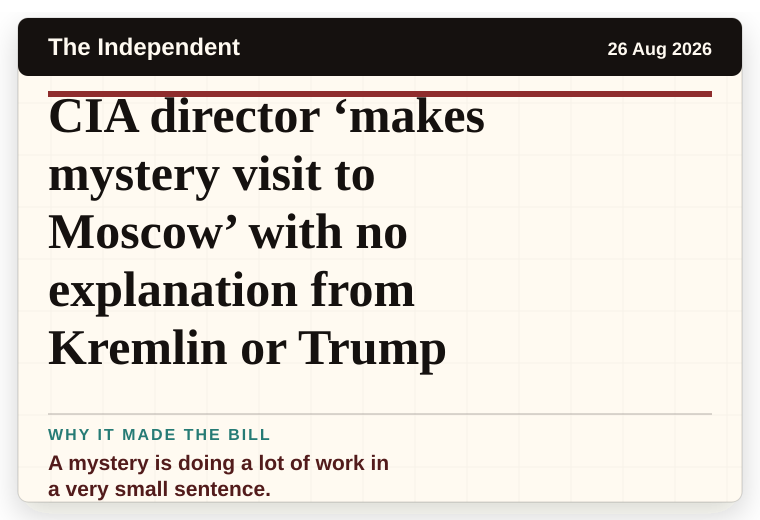
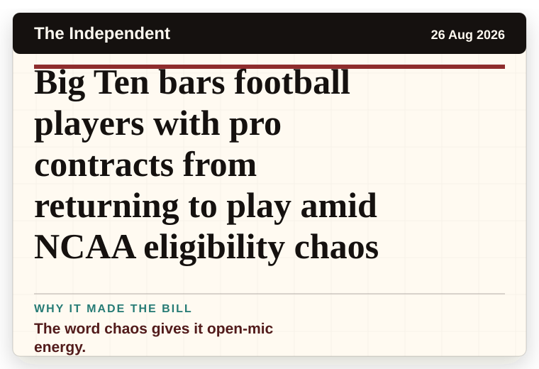
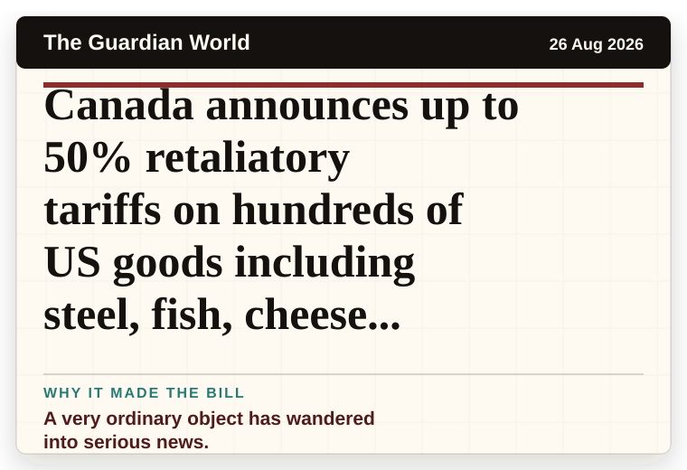
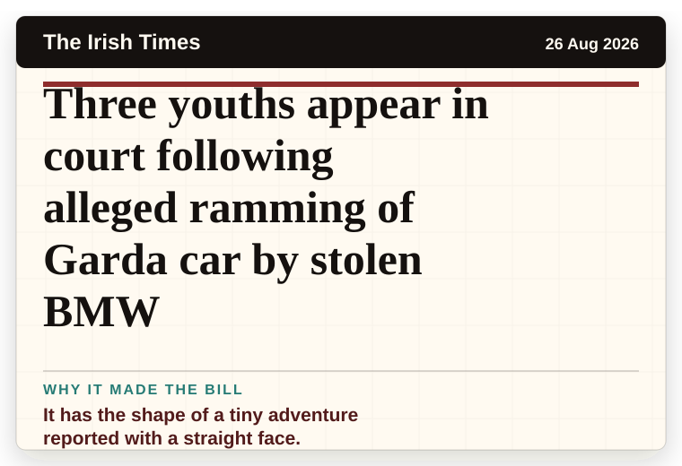
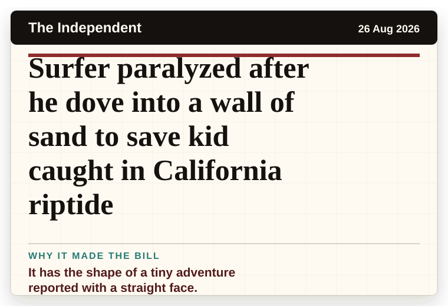
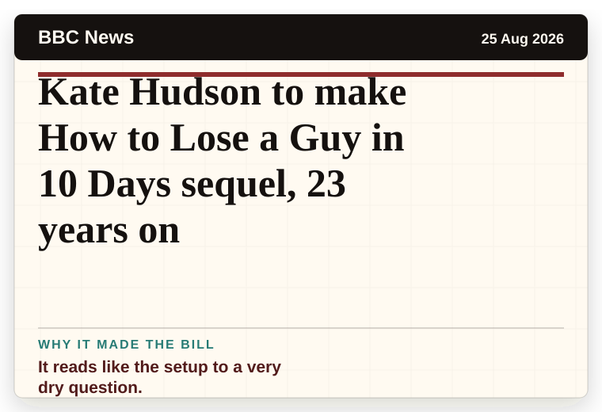
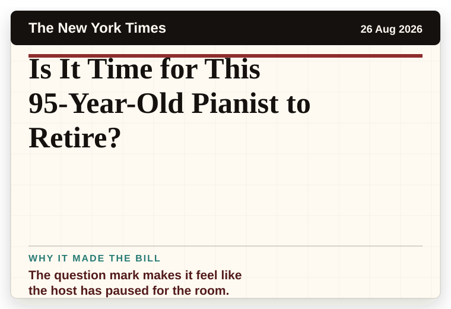

NT News
Australia
Darwin real estate: The latest auction and sales results for week ending August 23
It has the shape of a tiny adventure reported with a straight face.
The latest daily picks, linked back to the original sources. Search the room, pick a source, or follow a headline out to the full story.
Record updated: 26 Aug 2026, 07:43 AM AEST
Showing 16 headline candidates from the refresh run completed on 26 Aug 2026, 07:43 AM AEST.
It has the shape of a tiny adventure reported with a straight face.

A household object has somehow reached the news desk.

A wonderfully specific detail has taken centre stage.

It has the shape of a tiny adventure reported with a straight face.

A wonderfully specific detail has taken centre stage.

A wonderfully specific detail has taken centre stage.

A mystery is doing a lot of work in a very small sentence.

A wonderfully specific detail has taken centre stage.

A mystery is doing a lot of work in a very small sentence.

The word chaos gives it open-mic energy.

A very ordinary object has wandered into serious news.

It has the shape of a tiny adventure reported with a straight face.

It has the shape of a tiny adventure reported with a straight face.
It has that classic official-plan-meets-real-life shape.

It reads like the setup to a very dry question.

The question mark makes it feel like the host has paused for the room.